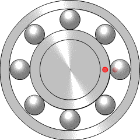

Assignment 4: Moving parts!

By PlusMinus - Own work, CC BY-SA 3.0, LinkBrainstorming cool movement - Ball bearings have always been one of my favorite moving parts and I wanted to make something that spins and has the potential to spin very fast without much effort. I thought about mechanisms and toys that do that and decided to make my own table top adaptation of a fidget spinner.
Step 1: Measurements and Setup
I started by measuring my ball bearing part to see what the dimensions of the inner cutout circle would need to be and also the thickness I would need to make my design in order to house the ball bearing properly.


Looking at the thickness of the ball bearing and the thickness of the Delrin options, I decided I would need to make two pieces fastened together.

Step 2: Working in Onshape
I made a circle the size of the cutout and then a larger circle that would become the outside suface of my shape.

Then I made a circle to trim out of the larger circle and copied that 4 times. I was so thrilled with the dimension tool because it made it really easy to position the circles exactly where I wanted them. The trim tool also worked very easily.

In order to turn my shape into a part I used extrude.

I changed the label of my part to "spinner body" even though I won't have many parts, it's always a good habit to label everything.

Step 3: Laser Cutting
I got a little tripped up on how to save my part to a DWG/DXF file. I felt like I knew this but just couldn't remember the exact step. Whenever I tried to export the part, I was only able to access different file types like STL files. Fortunately I found the Onshape help center and I realized I had to export the sketch instead of the part. This makes sense because the part is 3D and I needed to export something that would open in Illustrator to use the laser cutter. If I was printing on the 3D printer I would need to export the part as an STL. Phew, problem solved.


I opened my DWG file in Illustrator and set up for laser printing.

Thanks to Haihua's Slack message, I had a rough idea of settings for laser cutting Delrin.
For laser cutting 3.175mm Delrin I used these settings:
7% speed
100% power
Fortunately I made a test piece on cardboard first because bringing the file into Illustrator changed the size even though I thought I changed it to mm. After adjusting the file back to size in Illustrator, I had a successful laser cutting experience with the Delrin using the settings mentioned above.
Step 4: Assembly
It was amazingly satisfying when the ball bearing popped right in to my piece. It was just tight enough that it stays in but with a tiny give so I can push it out if needed. To quote the wise words of Joshua - Life is good.
I found a plastic piece that fit the ring in the middle of the ball bearing to serve as the base for it to spin on. This worked perfectly.

Step 5: Playing
It's extremely satisfying to spin and watch as the shapes transform. I am happy with my piece overall. I would possibly try creating a 3D printed version to see how it performs and separately experiment with using some metal in the design for added weight.